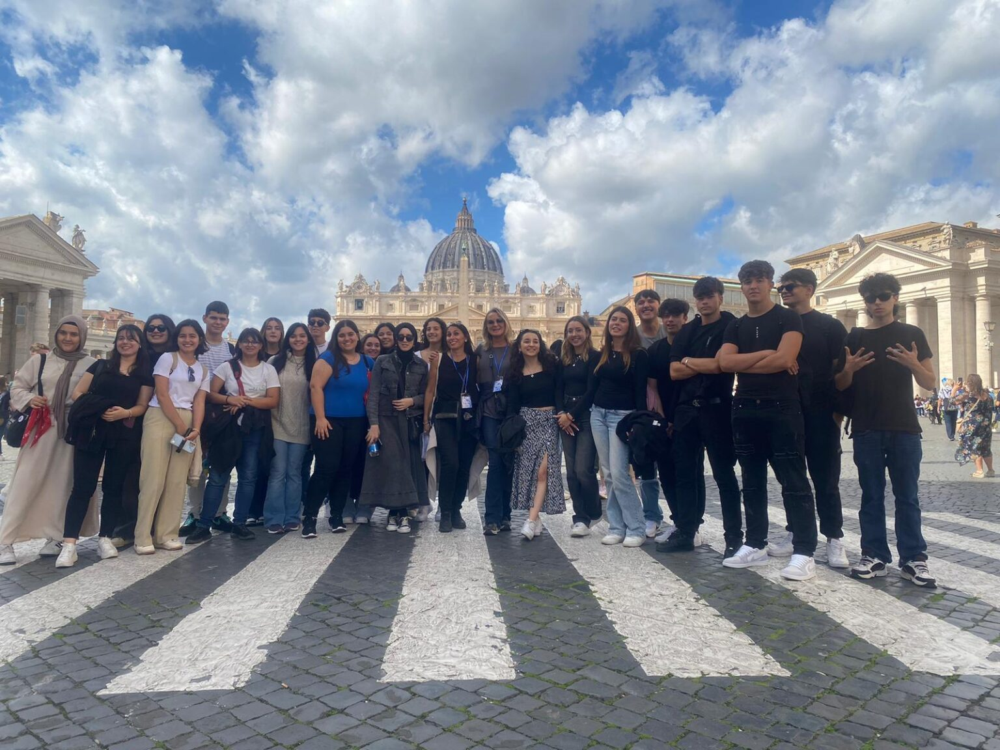
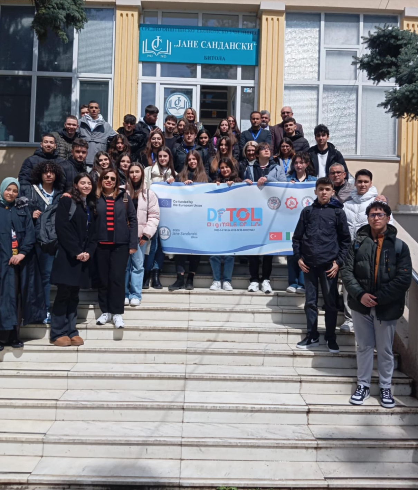
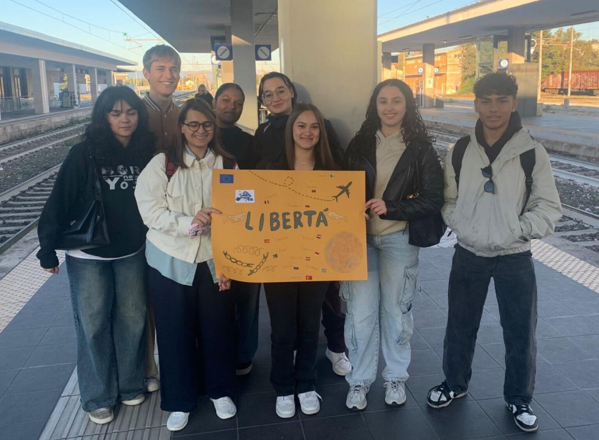

ERASMUS HUB - ITT Terni

Sito realizzato da Girboiu Alessandro e Rossi Valerio, studenti di informatica presso l'ITT "Allievi Sangallo" di Terni
Cosa è il progetto Erasmus?
Hai mai sognato di studiare a Parigi, fare un tirocinio a Berlino o scoprire la cultura di Madrid, tutto mentre arricchisci il tuo percorso accademico e personale? Il Progetto Erasmus è la tua porta d'accesso verso l'Europa e oltre! Nato per abbattere i confini e unire le culture, l'Erasmus non è semplicemente un periodo di studio all'estero: è un'avventura che cambia la vita. È l'opportunità di imparare una nuova lingua, stringere amicizie internazionali, sviluppare competenze super richieste nel mondo del lavoro e, soprattutto, scoprire una nuova versione di te stesso.
La nostra scuola:
L’ITT "Allievi-Sangallo" di Terni è un istituto d’eccellenza che unisce una storica formazione tecnica e scientifica a un'intensa attività di laboratorio, preparando gli studenti al mondo del lavoro e dell'università. In questo contesto, il progetto Erasmus+ è un pilastro fondamentale: grazie a tirocini e stage aziendali all'estero (validi anche come PCTO), la scuola offre a studenti e docenti una concreta finestra sull'Europa. Questa sinergia non solo potenzia le competenze linguistiche e tecniche in contesti d'avanguardia, ma cresce professionisti autonomi e pronti per il mercato del lavoro globale. Ecco alcune foto dei ragazzi di quarto e quinto della nostra scuola:


